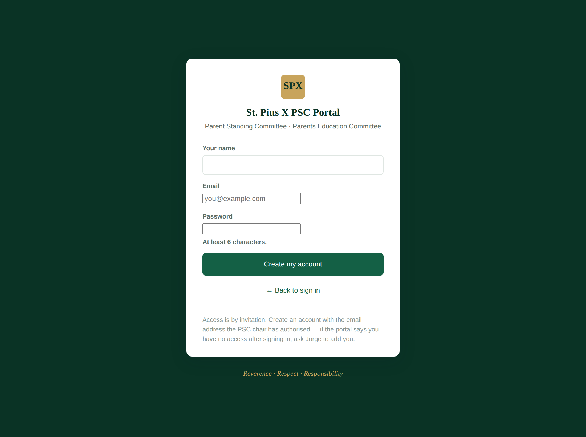
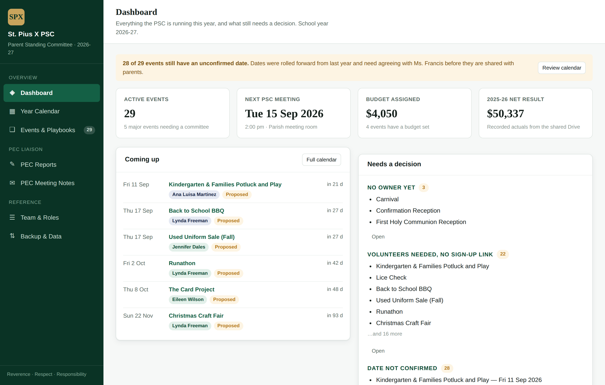
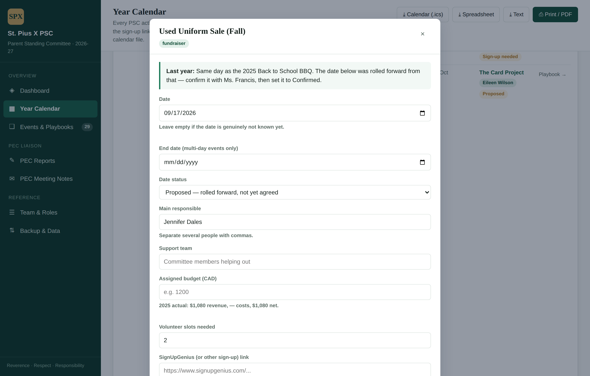
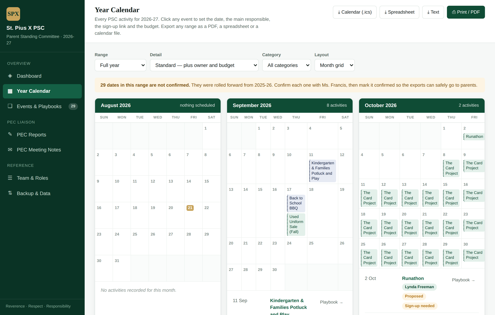
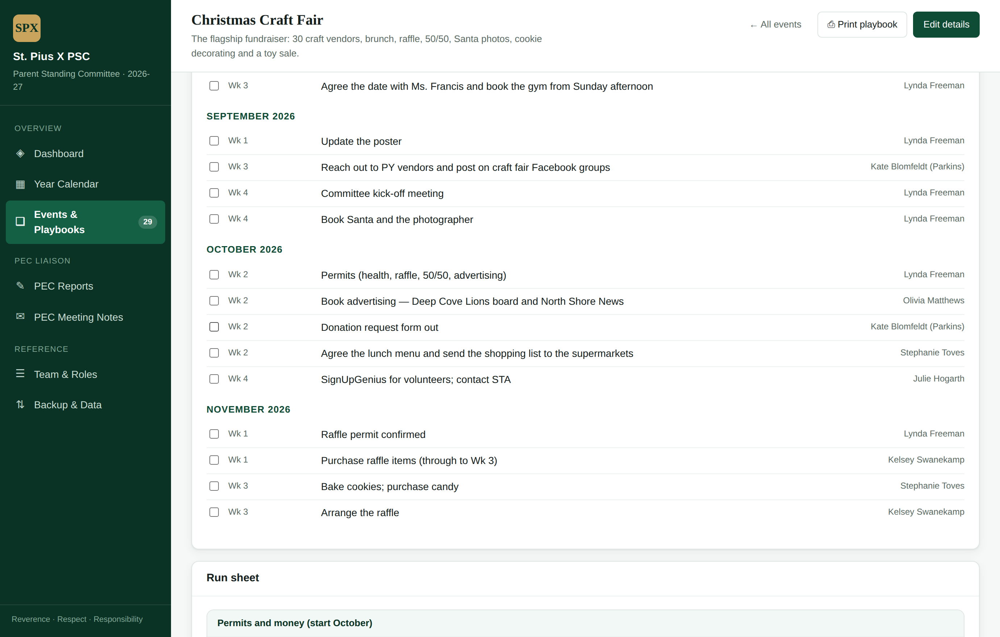
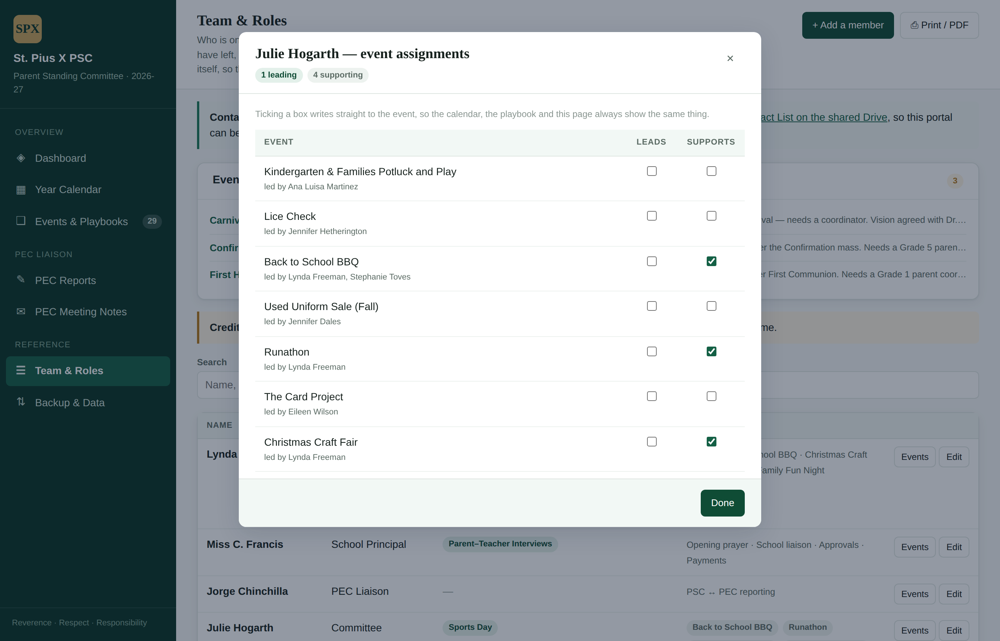

One place for the PSC's year: the full calendar of activities, a playbook for every event, and the monthly reporting between the PSC and the Parents Education Committee.
It was built from your own material — the 2025‑26 minutes and the PSC shared Drive. The events, the run sheets, the prior-year numbers and the lessons learned are all already in it.
Open jchinchillav.github.io/St.-Pius-PSC in any browser — a laptop, a tablet or a phone. There is nothing to install. You sign in with your email address and a password you choose yourself.
lyndadfreeman@gmail.com — and choose a password of at least 6 characters.

It must be the authorised address. Access is granted per email address. If you sign up with a different one, the portal will tell you that you are not on the list yet and show you nothing — that is the security working, not a fault. Just sign up again with the right address, or ask Jorge to authorise the one you prefer.
Forgotten your password later on? Use “Forgot your password?” on the sign-in screen. You will be emailed a link; opening it brings you back to the portal and asks you to choose a new password there and then. Nobody, including Jorge, can see your password at any point.
You have Editor access: you can change anything — dates, owners, budgets, volunteer links and notes. Your changes save immediately and Jorge sees them straight away; there is no “send” or “publish” step. The sidebar shows Shared · saving live when everything is connected properly.
The menu on the left has six screens:
| Screen | What it is for |
|---|---|
| Dashboard | What is coming up and what still needs a decision. |
| Year Calendar | The whole year. Set dates, owners, budgets and sign-up links. Export for sharing. |
| Events & Playbooks | Every event, with its run sheet, timeline, past numbers and documents. |
| PEC Reports | Jorge turns your minutes into the monthly PEC report here. |
| PEC Meeting Notes | Jorge's notes from the PEC meeting, and the feedback email back to you. |
| Team & Roles | Who owns what this year, and the PSC meeting schedule. |
The first screen answers two questions: what is next, and what is waiting on somebody. The right-hand column lists events with no owner, events that need volunteers but have no sign-up link yet, and dates that are still unconfirmed.

The calendar was built from last year's minutes. Every date was moved forward to the matching week of this year, so almost every event currently shows Proposed. A proposed date is a starting point for your conversation with Ms. Francis — it is not an agreed date.
Once a date is agreed, mark it Confirmed. Anything still proposed is labelled "(proposed)" in every export, so a provisional date can never accidentally reach parents as if it were final.

The same panel is where you set the rest:
If you change your mind, Reset to original puts that one event back to how it was seeded. It only affects that event.
At the top of Year Calendar you choose how much to show, then export it. Three controls shape the output:
| Control | Options |
|---|---|
| Range | One month · Two months · A term (five months) · The full year |
| Detail |
Summary — dates and event names only, for a bulletin. Standard — adds the owner, the budget and volunteer status. Full — adds last year's revenue, costs, net result and the lessons learned. Best for a committee meeting. |
| Layout | A month grid, or a plain agenda list. |

Tip. For the school bulletin use Range: One month with Detail: Summary. For a PSC meeting use Range: A term with Detail: Full — that gives you last year's numbers next to this year's plan.
This is the part meant to outlast any one volunteer. Open Events & Playbooks and click an event. Depending on the event you will find:

Print playbook gives you a PDF of the whole thing — useful to hand to whoever is taking an event on for the first time.
The events list also keeps a record of what the PSC has stopped doing. Set Show: Include discontinued & ideas and you will see the Costume Sale marked discontinued, with the October 2025 reasoning attached, and the Grade 7 book sale kept as an idea. That way a decision is not quietly reversed a few years later.
This is Jorge's side, but it is worth knowing what happens to the minutes you send, because it explains what comes back to you.
No email is ever sent automatically. The portal prepares a draft in Jorge's own mail app; he reads it and presses send. Ms. Francis can be copied when you both decide it is useful.
Team & Roles is fully editable. Families join and leave every year, so the roster is data you maintain, not a fixed list.
Being on this list is not the same as having a login. This list is who is on the committee; portal access is granted separately by email address. A new parent can be on the roster and credited on events without ever opening the portal.
Open their row with Edit and set the status to Past member. That keeps last year's history readable instead of erasing them — they disappear from the default view, and a filter appears if you ever want to see them again. Remove from roster deletes them outright; the portal warns you first if they still lead any events.
Renaming somebody (a changed surname, a correction) also updates them on every event they are credited on, so the calendar never keeps showing a name that no longer exists.
Click Events next to a person's name. You get every event with two tick boxes: Leads and Supports.

Why it works this way. Ticking a box writes to the event, not to a second copy of the information stored against the person. That is deliberate: the calendar, the event playbook and this page all read from the same place, so they can never end up disagreeing about who is running something.
If somebody is credited on an event but missing from the roster, the page tells you at the top so you can add them.
Everything you change is saved to a shared database the moment you press Save. There is no export step and no file to send: when you confirm a date, Jorge sees the confirmed date. When he saves a PEC report, it is there for you too.
You can still take a snapshot for your own records. Open Backup & Data and press Download backup — that gives you one file with every date, owner, budget and note. Worth doing before a big reshuffle of the calendar, and worth keeping a copy in the PSC shared Drive.
If you ever see “Sync problem” in the sidebar, your change is visible on your screen but did not reach the server — usually a dropped connection. Reload the page to see the true state, then make the change again.
Two things protect the committee's information. First, the portal stores names and roles only — no parent email addresses and no phone numbers. Those stay in the PSC Contact List on the shared Drive, where access is already controlled.
Second, the calendar, the budgets and the reports are only visible to people whose email address has been authorised. That check happens in the database itself, not just in the screen you see, so somebody who guessed the link and created an account would still see nothing at all.
Ms. Francis already has access as an Editor, so she can confirm dates directly rather than asking somebody to do it for her. Bringing anybody else in takes three steps, and there are three levels to choose from.
| Level | What they can do |
|---|---|
| Viewer | See everything, change nothing. Good for an event coordinator who just needs the run sheet. |
| Editor | Change dates, owners, budgets, the roster, reports and notes. |
| Administrator | All of the above, plus inviting and removing people. |
Authorising an email does not send anything. It only creates the permission. The person hears nothing until you send them the link yourself — which is what the Copy invitation button is for. It produces the joining instructions ready to paste into an email or a message.
They must sign up with the exact address that was authorised. A different address will get a polite "not on the list yet" screen and will see no data whatsoever.
Tell Jorge — particularly if a date was rolled forward incorrectly, an owner is wrong, or an event is missing. The seeded content came from the minutes and the Drive, so a gap in either becomes a gap here, and it is easily corrected.
Where to start. Open Year Calendar, work down the autumn events, and confirm the dates you already know. That single pass turns the calendar from a proposal into the committee's plan for the year.